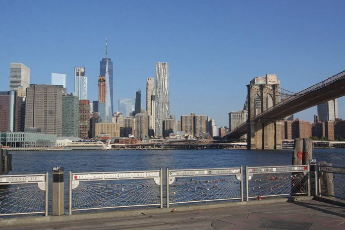
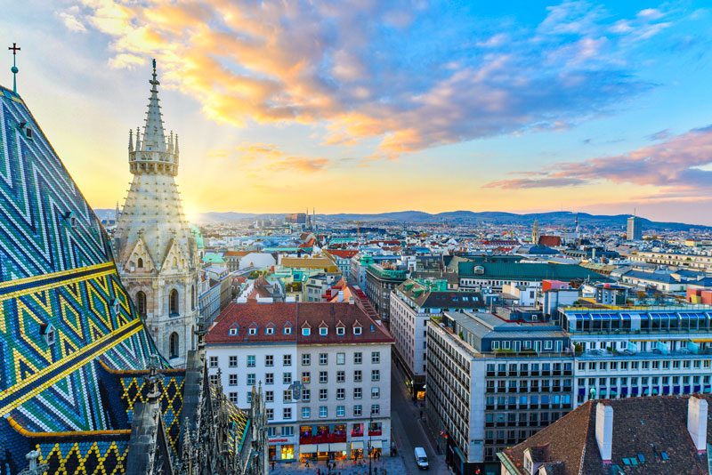
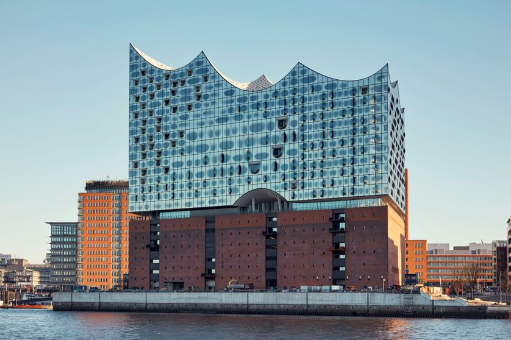

Premier voyage : New York
Ce premier voyage m'a permis de découvrir un nouveau continent et donc une culture complètement différente de la culture occidentale. New York montre une facette de l’homme extravagante à travers la grandeur de tout ce qui nous entoure quand on visite la ville.
Source : https://www.cnewyork.net/bons-plans/visites/photo-vue-pont-brooklyn-new-york/
Pour moi, cette expérience m’a permis de relativiser la place de l’homme dans le monde. Il cherche à compenser le fait qu’il ne soit finalement pas grand chose à l’échelle de la Terre.
Deuxième voyage : Vienne
Dans ce deuxième voyage, Vienne m’a impressionné par la quantité et la qualité d’exposition diverses. Cette ville est considérée comme l’une des capitales de la culture et je comprends pourquoi !
Source : https://www.labecedaire.fr/2019/09/17/autriche-vienne-paradis-du-logement-pour-tous/
Le nombre d’églises m’a aussi surpris. La beauté et l’histoire que portent ces bâtiments me fascinent bien que je ne prenne pas part dans une religion quelconque.
Troisième voyage : Hambourg
Le dernier voyage dont je vais vous parler est Hambourg. La ville comporte beaucoup de contraste, on peut passer dans un quartier défavorisé et ensuite sur les quais de l’Elbe et un peu plus loin le grand bâtiment de la philharmonie.
Cependant, ce qui m’a le plus marqué est la gentillesse et l’ouverture d’esprit des Hambourgeois. On voit que le jugement tel que les français l’aime n’existe pas là-bas.